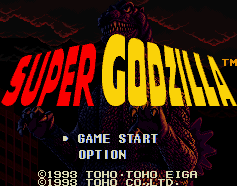

Gojira - SNES Games
Table of Contents
|
Series Information
|
Gameboy Games
MSX Games
|
Nintendo Games
|
SNES Games
Super Godzilla

Genre:
Strategy/Fighting game
You control Godzilla as he moves about the city to get to the evil monster. No other information available at this time.
Anime Video Game Resource Center © 1998 by
Luis A. Cruz